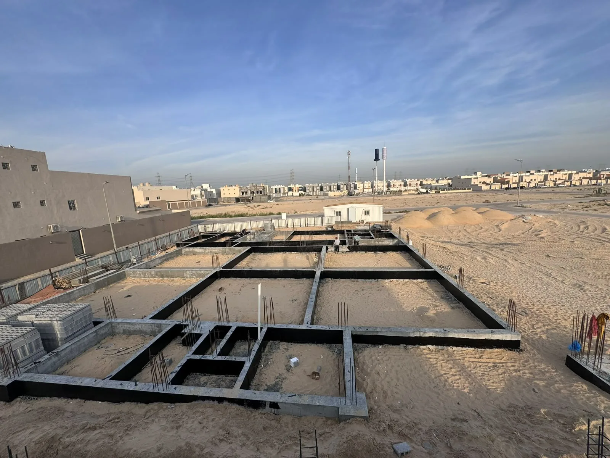

البناء والإنشاءات في الرياض يحتاجان إلى إدارة دقيقة لأن المشروع يمر بعدة مراحل متصلة: دراسة الموقع، تحديد نطاق العمل، تنفيذ الأعمال الأساسية، تنسيق الكهرباء والسباكة، ثم التمهيد للتشطيب أو التسليم النهائي. أي قرار غير واضح في البداية قد يظهر أثره لاحقًا في التكلفة أو مدة التنفيذ أو جودة التشطيب.
من المهم أن تتعامل مع مشروع البناء كمنظومة متكاملة، وليس كخطوات منفصلة. فاختيار أماكن الفتحات، مسارات التمديدات، طبيعة المواد، وطريقة المتابعة كلها قرارات تؤثر في النتيجة النهائية. لذلك تعتمد شركة تعاود للمقاولات العامة على وضوح النطاق وربط المراحل ببعضها قبل البدء.
مرحلة دراسة المشروع قبل البناء
قبل بداية التنفيذ يجب فهم نوع المشروع واستخدامه المتوقع: هل هو فيلا سكنية، ملحق، توسعة، مبنى تجاري، أو تجهيز مساحة قائمة؟ تختلف طريقة التخطيط حسب طبيعة الاستخدام وعدد المراحل المطلوبة.
- تحديد نوع المشروع ومساحته ونطاق الخدمة المطلوبة.
- مراجعة المتطلبات الفنية قبل بدء التنفيذ.
- ربط قرارات البناء المبكرة بالتشطيب والكهرباء والسباكة.
- معرفة الأولويات: السرعة، الجودة، الميزانية، أو التسليم على المفتاح.
تحديد نطاق العمل بوضوح
نطاق العمل هو الوثيقة العملية التي تقلل الخلافات أثناء المشروع. يجب أن يوضح البنود الأساسية، المراحل، مسؤوليات كل طرف، وما إذا كانت الخدمة تشمل البناء فقط أم تشمل الكهرباء والسباكة والتشطيب أيضًا.
أخطاء شائعة في مشاريع البناء
أكثر الأخطاء تكرارًا هي البدء بدون تصور كامل للمراحل. قد يبدو المشروع بسيطًا في البداية، لكن عدم تنسيق التخصصات يؤدي إلى تعارضات بين الأعمال، خصوصًا قبل التشطيب.
- الاعتماد على سعر مختصر بدون تفاصيل كافية.
- تأجيل قرارات الكهرباء والسباكة لما بعد تنفيذ أعمال مؤثرة.
- عدم مراجعة الملاحظات قبل الانتقال من مرحلة لأخرى.
- غياب جهة واحدة مسؤولة عن تنسيق مراحل المشروع.
الربط بين البناء والتشطيب
حتى لو كان المطلوب هو تنفيذ أعمال البناء فقط، فمن الأفضل التفكير مبكرًا في التشطيب. مواقع نقاط الكهرباء، أماكن السباكة، توزيع الإضاءة، ومسارات التكييف قد تحتاج قرارات مبكرة لتجنب التكسير والتعديل لاحقًا.
عند البناء فقط
يتم التركيز على الأعمال الأساسية مع مراعاة القرارات التي تؤثر على المراحل اللاحقة.
عند تسليم المفتاح
يتم ربط البناء بالتشطيب والديكور والكهرباء والسباكة ضمن مسار واحد منظم.
متى تختار خدمة تسليم مفتاح؟
خدمة تسليم مفتاح مناسبة إذا كنت تريد جهة واحدة تتابع المشروع من التخطيط والتنفيذ حتى التشطيب النهائي. هذا الخيار يقلل الحاجة للتنسيق بين أكثر من جهة، ويساعد على وضوح المدة والمسؤوليات.
خدمات مرتبطة بمشروع البناء
تحتاج تنفيذ مشروع بناء في الرياض؟
شاركنا نوع المشروع وموقعه والمرحلة المطلوبة، وسنساعدك في تحديد نطاق العمل المناسب قبل البدء.
طلب استشارة أو عرض سعرهل يمكن تنفيذ البناء فقط دون التشطيب؟
نعم، لكن من الأفضل مراعاة قرارات التشطيب والكهرباء والسباكة مبكرًا حتى لا تظهر تعديلات مكلفة لاحقًا.
ما أهم خطوة قبل طلب عرض سعر؟
تحديد نوع المشروع، موقعه، المرحلة المطلوبة، وأي مخططات أو صور تساعد على فهم نطاق العمل.
هل تسليم المفتاح أفضل من التعاقد المنفصل؟
يكون أفضل عندما ترغب في تقليل التنسيق بين عدة جهات وربط التنفيذ والتشطيب ضمن خطة واحدة.
الخلاصة
البناء الناجح في الرياض يحتاج إلى تخطيط، نطاق واضح، متابعة، وتنسيق بين التخصصات. شركة تعاود للمقاولات العامة تقدم حلول بناء وإنشاءات قابلة للربط بخدمات التشطيب والترميم والتسليم على المفتاح للمشاريع السكنية والتجارية.